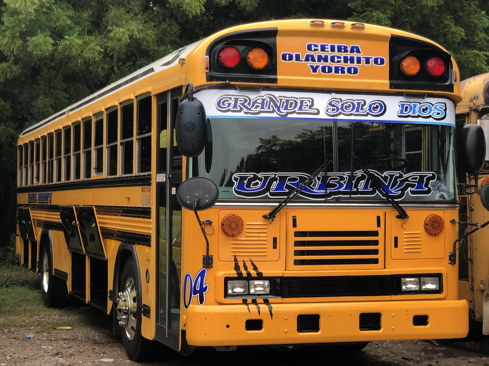
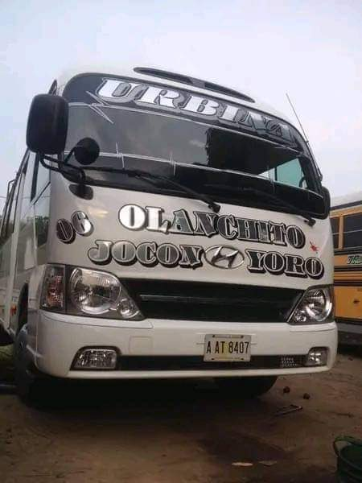
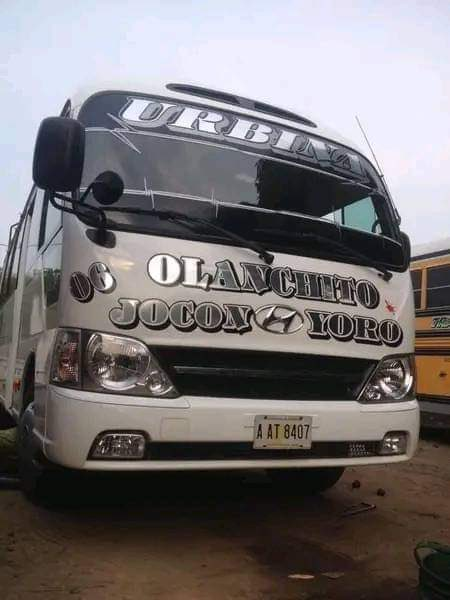

Transportes Urbina
Somos una Empresa comprometida al servicio de nuestro usuario tratando cada dia con la ayuda de DIOS brindar un servicio de calidad y responsabilidad. La empresa nacio en Olanchito, departamento de Yoro, Yoro, en el año 1998 hasta la actualidad. Estamos comprometidos con el binestar de toda nuestra población. Somos una empresa Anomina.

RUBRO
Somos un transporte terrestre remunerado, en vehículos automotores, constituye un servicio público brindado a la poblacion hondureña, con horarios toda la semana desde las 4 am hasta las 2 pm.
Cel: 9685-2600/ 9825-4589
Con ruta: Olanchito, Jocon, Yoro, sps, santa rita, el Porgreso y la Ceiba.

Transportistas en Olanchito construyen puente de madera para sus usuarios
Propietarios de "Transportes Urbina" se la han ingeniado para transportar a sus usuarios, y ante la falta de un puente que les garantice la movilidad, construyeron un improvisado, pero funcional puente para que los usuarios y pobladores de Jocón, en el municipio de Olanchito, Yoro y residentes de otras aldeas que quedaron incomunicados puedan abordar las unidades de transporte mientras habilitan el paso en el río de San Marcos, que fue destruido con el paso de la tormenta Iota.

Diferentes modelos de trasportes
Contamos con diferentes medios de transporte como ser: buses grandes. rapiditos blancos pequeños y rapiditos grandes amarillos
 
